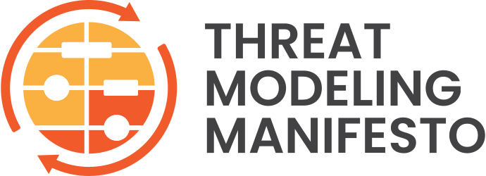
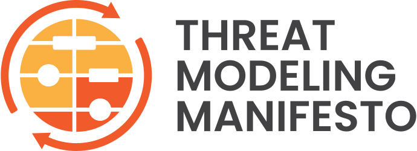

脅威モデリングとは何か？
脅威モデリングとはシステムの表現を分析してセキュリティとプライバシーの特定に関する懸念を浮き彫りにすることです。
最高レベルの脅威モデルでは 4つの重要な質問 をします:
- 私たちが取り組んでいるのは何か？
- うまくいかない可能性があるのは何か？
- それに対して行うつもりであることは何か？
- 私たちが行った仕事は十分か？
なぜ脅威モデルなのか？
脅威モデリングを行うと、システムで問題になるのは何かを認識できます。また、システムのライフタイムの初期段階であろうと全体を通してであろうと、緩和を必要とする設計や実装の問題を正確に特定できます。脅威モデルのアウトプットは、脅威と呼ばれ、その後の設計、開発、テスト、ポストデプロイメントのフェーズで行う可能性のある判断材料を提供します。
誰が脅威モデルをすべきか？
あなた。みなさん。システムのプライバシー、セーフティ、セキュリティに関わるどなたでも。
どのように脅威モデリング宣言を使うべきか？
この宣言はあなたのニーズに最も適した手法を開発または改良するためのガイドとしてお使いください。私たちは宣言のガイダンスに従うことでより効果的でより生産的な脅威モデリングにつながると考えています。そうして、よりセキュアなアプリケーション、システム、組織の開発に成功し、データやサービスに対する脅威からそれらを保護できるようになるでしょう。宣言にはアイデアが含まれていますが、ハウツーではありませんし、手法にはとらわれません。
脅威モデリング宣言は アジャイル宣言 と同様の形式で以下の2つのガイドラインを掲げています。
- 価値: 脅威モデリングにおける価値とは相対的な価値、メリット、または重要性を持つものです。つまり、左記の事柄に価値があることを認めながらも、私たちは右記の事柄により価値をおきます。
- 原則: 原則は脅威モデリングの基本的な真理を述べています。 原則には次の3つのタイプがあります。 (i) 脅威モデリングを成功させるための、基本的な、主要な、もしくは一般的な真理 (ii) 強く推奨されるパターン (iii) 避けるべきアンチパターン
価値
私たちは以下の価値に至りました。
- チェックボックスの遵守よりも 設計上の問題を発見して修正する文化
- プロセス、手法、ツールよりも 人との協力体制
- セキュリティやプライバシーのスナップショットよりも 理解を深めるための行程
- 話すことよりも 脅威モデリングの実施
- 単一のデリバリよりも 継続的な改善
原則
私たちは以下の原則に従います。
- 脅威モデリングは早期かつ頻繁な分析を通してシステムのセキュリティやプライバシーを改善するために使用することが最適です。
- 脅威モデリングは組織の開発プラクティスと整合し、システムの管理可能な部分をそれぞれのスコープとするイテレーションでの設計変更に追従しなければなりません。
- 脅威モデリングの成果は利害関係者にとって価値がある場合に意味があります。
- 対話は価値につながる共通の理解を確立するための鍵であり、それらの理解をドキュメントに記録して、対策を可能にします。
以下のパターンは脅威モデリングに役立ちます。
体系的なアプローチ
構造化された方法でセキュリティとプライバシーの知識を適用することで網羅性と再現性を実現します。
情報に基づく創造性
職人的技巧と科学の両方を取り入れることで創造性を発揮できるようにします。
さまざまな視点
適切な対象分野の専門家と部門の枠を超えた協力体制により多様なチームを編成します。
便利なツールキット
生産性の向上、ワークフローの強化、再現性の実現、対策可能性の提供を可能にするツールでアプローチをサポートします。
理論を実践の中に
現場のニーズに合わせて現場でテストされ成功した技法を使用します。それらの技法の利点と限界について最新の意見に基づいています。
以下のアンチパターンは脅威モデリングを阻害します。
ヒーロー脅威モデラー
脅威モデリングは生まれつきの能力や独自の考え方に依存するものではありません。誰にでもできるものであり、またそうあるべきものです。
問題への感心
問題を分析するだけではいけません。現実的で適切な解決策を導き出してください。
過度に集中する傾向
モデルの各部分は相互に依存している可能性があるため、全体像を見失ってはいけません。敵対者、資産、あるいは技法に偏った注意を払うことは避けてください。
完璧な表現
複数の脅威モデリング表現を作成することをお勧めします。理想的なビューは1つではありませんし、別の表現によって異なる問題を明らかにできるかもしれません。
脅威モデリング宣言とは
脅威モデリング宣言は脅威モデリングの知識を集めて整理したものを共有することを意図しています。他の実務者が脅威モデリングを採用して、開発時のセキュリティやプライバシーが向上するように、情報を提供し、啓発し、ひらめきを与えることでしょう。
私たちは脅威モデリングについて考え、行い、教え、実践を発展させてきた長年の経験からこの宣言を作成しました。私たちは業界のプロフェッショナル、学者、執筆者、ハンズオンエキスパート、プレゼンターといった多様なバックグラウンドを持っています。私たちは脅威モデリングにおけるさまざまな視点を集結しています。脅威モデリングにおいて最良の結果をもたらす条件とアプローチ、そして失敗した際の是正方法に重点を置いた継続的な会話が私たちのアイデアを形作り続けています。
この宣言の最新版は常に https://www.threatmodelingmanifesto.org/ にあります。
この著作物は Creative Commons Attribution 4.0 International License の下でライセンスされています。
著者
脅威モデリング宣言のワーキンググループはセキュリティやプライバシーに対する脅威モデリングに長年の経験を持つ個人で構成されています。
- Zoe Braiterman
- Adam Shostack
- Jonathan Marcil
- Stephen de Vries
- Irene Michlin
- Kim Wuyts
- Robert Hurlbut
- Brook S.E. Schoenfield
- Fraser Scott
- Matthew Coles
- Chris Romeo
- Alyssa Miller
- Izar Tarandach
- Avi Douglen
- Marc French
ワーキンググループはドキュメントの内容と構成に関する Loren Kohnfelder と Sheila Kamath の技術編集レビューと専門家のフィードバックに感謝します。